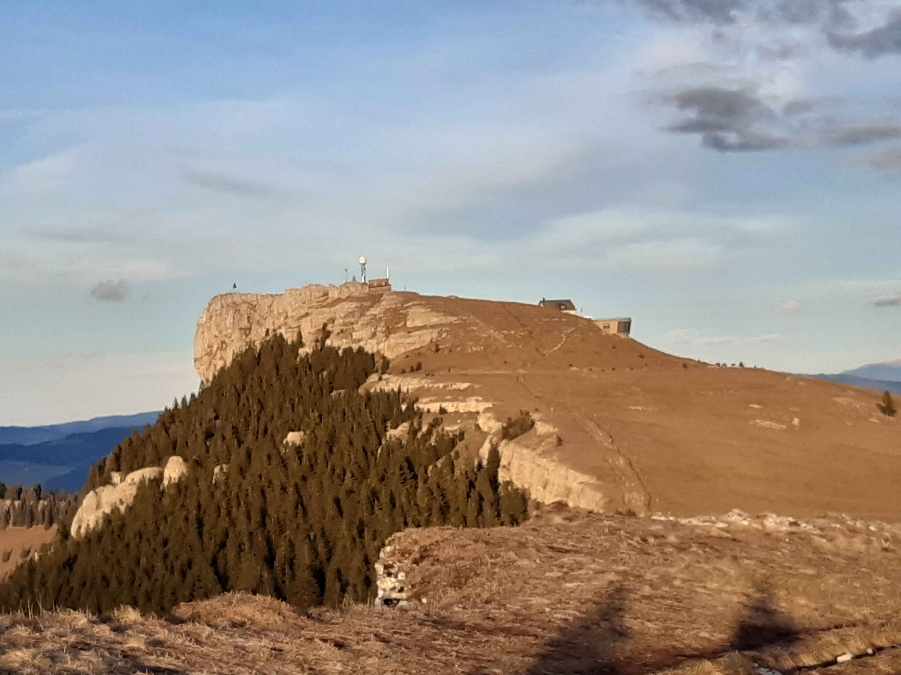

Retour
Vaud
Chasseron
- Type : boucle
- Description de l'itinéraire : le Sollier - Chasseron - petites Roches - les Avattes
- Distance : 5 km
- Dénivelé positif : 300 m
- Point le plus bas : 1340 m
- Point le plus haut : 1608 m
- Cotation en l'absence de neige : T2
- Intérêt : 3/5
- Date : 28/12/2022
- Photos :
 Le Chasseron vu depuis les petites Roches